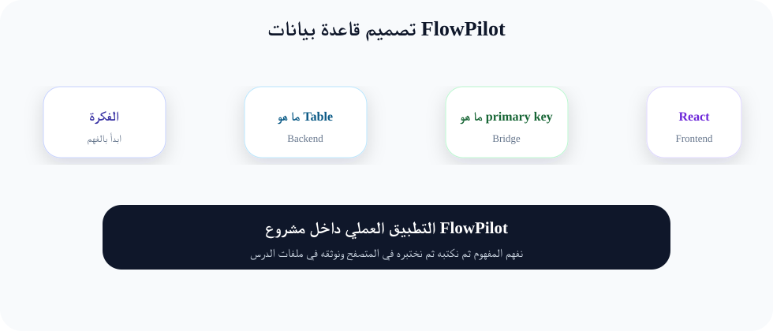
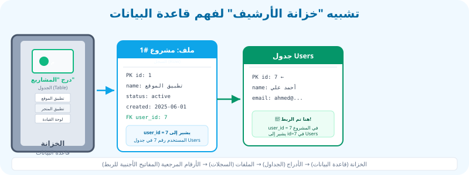

تصميم قاعدة بيانات FlowPilot قبل كتابة الجداول
"قاعدة البيانات هي ذاكرة التطبيق. قبل أن نكتب سطراً واحداً من الكود، يجب أن نخطط لهذه الذاكرة بعناية فائقة."
مقدمة: ما هي قاعدة البيانات ولماذا نحتاجها؟
تخيل معي أنك تبني تطبيق FlowPilot لإدارة المشاريع. المستخدم يدخل اسم مشروعه، يضيف مهاماً، يعيّن فريق عمل. ثم فجأة يغلق المتصفح أو ينقطع التيار الكهربائي. السؤال الأهم: أين تذهب كل هذه المعلومات؟
الجواب البسيط: بدون قاعدة بيانات، تختفي المعلومات كلها! React تعيش فقط في المتصفح، وعندما يغلق المتصفح تموت كل المتغيرات التي كنت تستخدمها. هنا يأتي دور قاعدة البيانات (Database).
قاعدة البيانات هي برنامج متخصص يعمل على الخادم (Server) ويحفظ المعلومات بشكل دائم ومنظم. Laravel يتصل بقاعدة البيانات، ويخزن فيها كل شيء: أسماء المستخدمين، المشاريع، المهام، التواريخ. حتى لو أغلقت الجهاز وأعدت تشغيله، تبقى البيانات في مكانها.
في هذا الكورس نستخدم MySQL أو MariaDB كقاعدة بيانات. هذه أنظمة معروفة بقوتها وسرعتها ومجانيّتها. Laravel يزوّدنا بأدوات سهلة للتعامل معها، كما سنرى في الدروس القادمة.
مصطلحات مهمة للمبتدئ:
- Database (قاعدة بيانات): المكان الذي يُخزّن فيه التطبيق معلوماته بشكل دائم ومنظّم.
- DBMS (نظام إدارة قواعد البيانات): البرنامج الذي يدير قاعدة البيانات، مثل MySQL أو MariaDB.
- Server (خادم): جهاز كمبيوتر قوي يعمل 24 ساعة طوال الأسبوع ويستضيف تطبيقك وبياناته.
- Table (جدول): مجموعة منظمة من البيانات المتشابهة داخل قاعدة البيانات.
المفاهيم الأساسية: الجداول، الأعمدة، والسجلات
لنفهم قاعدة البيانات، سنستخدم تشبيهاً بسيطاً: برنامج Excel أو Google Sheets. لو فتحت ملف Excel، سترى:
الملف نفسه هو قاعدة البيانات. الأوراق (Sheets) داخله هي الجداول (Tables). داخل كل ورقة، لديك أعمدة (Columns) تمثل أنواع المعلومات، وصفوف (Rows) تمثل كل سجل على حدة.
مثال: جدول "المشاريع" في FlowPilot
| id (المعرّف) | name (الاسم) | status (الحالة) | created_at (تاريخ الإنشاء) |
|---|---|---|---|
| 1 | تطبيق FlowPilot | active | 2025-06-01 |
| 2 | موقع الشركة | completed | 2025-05-15 |
| 3 | تطبيق المتجر | pending | 2025-06-10 |
↑ هذا الجدول يمثل 3 مشاريع. كل صف = مشروع واحد. كل عمود = معلومة محددة عن المشروع.
شرح الأجزاء الرئيسية:
- Table (الجدول): هو هيكل ينظم بيانات متشابهة. مثلاً، كل المشاريع في جدول واحد، وكل المستخدمين في جدول آخر. لا يمكن خلط المشاريع مع المستخدمين في نفس الجدول.
- Column (العمود): هو نوع واحد من المعلومات. على سبيل المثال، عمود
nameيخزن أسماء المشاريع. كل عمود له نوع بيانات محدد (نص، رقم، تاريخ). - Row (السجل أو الصف): هو مجموعة كاملة من المعلومات لعنصر واحد. مثلاً، الصف الخاص بمشروع "تطبيق FlowPilot" يحتوي على اسمه، حالته، وتاريخ إنشائه.
- Field (حقل): هو تقاطع عمود مع صف. مثلاً، القيمة "active" في عمود
statusللصف رقم 1 هي حقل.
المفاتيح: Primary Key و Foreign Key
عندما يكون لدينا عدة جداول، نحتاج طريقة لربطها ببعضها. هنا يأتي دور المفاتيح.
🔑 Primary Key (المفتاح الأساسي)
هو عمود خاص في كل جدول يعرّف كل سجل بشكل فريد. لا يمكن أن يتكرر في سجلين. تخيله مثل رقم الهوية الوطنية - كل شخص له رقم واحد لا يشاركه فيه أحد.
- عادةً يكون اسمه
id - قيمته تزداد تلقائياً (1, 2, 3, ...)
- لا يمكن أن يكون
NULL(فارغاً) - كل جدول لديه مفتاح أساسي واحد فقط
🔗 Foreign Key (المفتاح الأجنبي)
هو عمود في جدول يشير إلى المفتاح الأساسي لجدول آخر. بهذه الطريقة نربط الجداول. تخيله مثل "رقم الموظف" المكتوب في ملف المشروع ليعرف من المسؤول عنه.
- مثلاً:
user_idفي جدول المشاريع - يشير إلى
idفي جدول المستخدمين - يمكن أن يتكرر (عدة مشاريع لنفس المستخدم)
- يمكن أن يكون
NULL(إذا لم يكن هناك مستخدم)
قاعدة ذهبية:
المفتاح الأساسي يُعرِّف السجل بنفسه. المفتاح الأجنبي يربط هذا السجل بسجل في جدول آخر.
مثال: في جدول projects، العمود user_id هو مفتاح أجنبي يشير إلى id في جدول users. هذا يعني "هذا المشروع مملوك للمستخدم رقم 5".
العلاقات بين الجداول: One-to-Many و Many-to-Many
الجداول في قاعدة البيانات ليست جزراً منعزلة. إنها متصلة ببعضها عن طريق العلاقات (Relationships). هناك 3 أنواع رئيسية من العلاقات. سنركز على النوعين الأكثر شيوعاً في FlowPilot.
1. One-to-Many (واحد إلى متعدد) ← الأكثر استخداماً
تعني أن سجلاً واحداً في الجدول الأول يرتبط مع عدة سجلات في الجدول الثاني.
مثال في FlowPilot: User → Projects
- مستخدم واحد (مثلاً "أحمد") يمكنه أن يملك عدة مشاريع
- مشروع واحد يملكه مستخدم واحد فقط (صاحب المشروع)
- العلاقة تتجه من اليسار إلى اليمين: User "يملك" Projects
- نحققها بإضافة
user_idفي جدولprojects
مثال آخر: Project → Tasks
- مشروع واحد (مثلاً "تطبيق FlowPilot") يحتوي على مهام متعددة
- مهمة واحدة تنتمي إلى مشروع واحد فقط
- نحققها بإضافة
project_idفي جدولtasks
2. Many-to-Many (متعدد إلى متعدد)
تعني أن سجلاً في الجدول الأول يمكنه الارتباط مع عدة سجلات في الجدول الثاني، والعكس صحيح.
مثال في FlowPilot: Projects ↔ Teams (Users)
- مشروع واحد يمكن أن يضم عدة أعضاء
- عضو واحد (User) يمكن أن يعمل في عدة مشاريع
- هذه علاقة متعددة-إلى-متعددة
- لا يمكننا حلها بمفتاح أجنبي واحد فقط. نحتاج جدول وسيط (Pivot Table)
3. One-to-One (واحد إلى واحد) ← نادر في FlowPilot
سجل واحد في الجدول الأول يرتبط بسجل واحد فقط في الجدول الثاني. مثل: كل مستخدم لديه ملف شخصي واحد (Profile). نحتاجها لو أردنا توسيع بيانات المستخدم دون زيادة تعقيد جدول users.
مثال واقعي: خزانة الأرشيف في الشركة
تخيل أنك تعمل في شركة كبيرة. هناك غرفة كاملة مليئة بخزائن الأرشيف. هذه الخزائن تمثل قاعدة البيانات.
📁 الخزانة ← قاعدة البيانات
الخزانة الضخمة هي قاعدة البيانات. فيها كل معلومات الشركة.
📂 الدرج ← الجدول (Table)
كل درج مخصص لنوع معين: درج للموظفين، درج للمشاريع، درج للفواتير.
📄 الملف الواحد ← السجل (Row)
كل ملف يمثل موظفاً واحداً أو مشروعاً واحداً. له رقم تعريف خاص.
🏷️ رقم الملف ← Primary Key
رقم فريد لا يتكرر أبداً على كل ملف، نستخدمه لتمييزه عن غيره.
🔗 الإشارات المرجعية ← Foreign Keys
في ملف المشروع، نكتب "المسؤول: رقم الموظف 7". هذا الرقم يشير إلى ملف الموظف في الدرج الآخر. هذه هي الـ Foreign Key بالضبط! نحن نربط المشروع بالموظف عن طريق رقم الموظف.
تصميم هيكل قاعدة بيانات FlowPilot
الآن سنطبق كل ما تعلمناه على تطبيق FlowPilot. سنحتاج إلى الجداول التالية:
users
جدول المستخدمين
- id (PK)
- name
- password
- timestamps
projects
جدول المشاريع
- id (PK)
- user_id (FK → users)
- name
- description
- status
- deadline
- timestamps
tasks
جدول المهام
- id (PK)
- project_id (FK → projects)
- assigned_to (FK → users)
- title
- description
- status
- priority
- due_date
- timestamps
teams
جدول الفرق
- id (PK)
- owner_id (FK → users)
- name
- description
- timestamps
جدول Pivot: project_user (الربط بين المشاريع والأعضاء)
كما تعلمنا، العلاقة بين المشاريع والمستخدمين (كأعضاء) هي Many-to-Many. مشروع واحد يضم عدة أعضاء، وعضو واحد يعمل في عدة مشاريع. لحل هذه العلاقة، نحتاج جدولاً وسيطاً (Pivot Table).
هذا الجدول لا يمثل "شيئاً" حقيقياً في التطبيق، بل هو مجرد أداة ربط. اسمه يجمع بين اسمي الجدولين المرتبطين: project_user (لاحظ الترتيب الأبجدي: project قبل user).
محتوى جدول project_user:
| id | project_id (FK) | user_id (FK) | role | created_at |
|---|---|---|---|---|
| 1 | 1 | 2 | developer | 2025-06-01 |
| 2 | 1 | 3 | designer | 2025-06-01 |
| 3 | 2 | 2 | developer | 2025-06-05 |
↑ هذا الجدول يقول: المشروع رقم 1 يضم المستخدمين 2 و 3. والمستخدم رقم 2 يعمل في المشروعين 1 و 2.
لماذا نحتاج جدول Pivot؟
لأن المفتاح الأجنبي الواحد لا يكفي لعلاقة متعددة-إلى-متعددة. لو وضعنا project_id واحداً في جدول users، فهذا يعني أن كل مستخدم يمكنه الانتماء لمشروع واحد فقط! والواقع أن عضو الفريق يعمل في مشاريع متعددة. لذلك نحتاج جدولاً وسيطاً يحوي زوجاً من المفاتيح الأجنبية.
مخطط ERD (Entity-Relationship Diagram)
ERD هو رسم بياني يوضح الجداول (الكيانات) والعلاقات بينها. هو مثل الخريطة المعمارية للمبنى قبل بنائه. المعماري لا يبدأ بصب الخرسانة قبل أن يرسم المخطط. كذلك المبرمج لا يبدأ بكتابة الكود قبل أن يرسم ERD.
انظر إلى المخطط أدناه. ترى المستطيلات تمثل الجداول، والخطوط تمثل العلاقات. الخطوط المتصلة تعني "يملك" أو "يحتوي". المفتاح FK بجانب اسم العمود يعني أنه مفتاح أجنبي.

مخطط ERD: يوضح الجداول الأربعة الرئيسية وعلاقاتها
قراءة المخطط:
- Users ←→ Projects: User واحد يملك Projects متعددة (One-to-Many). المفتاح
user_idفي Projects. - Projects ←→ Tasks: Project واحد يحتوي Tasks متعددة (One-to-Many). المفتاح
project_idفي Tasks. - Projects ↔ Users (members): Many-to-Many عبر جدول
project_user. - Teams ←→ Users: فريق واحد يملكه User واحد (One-to-Many). المفتاح
owner_idفي Teams.
خطوات تصميم قاعدة البيانات (قبل كتابة الكود)
هذه الخطوات الخمس تمثل المنهجية التي يتبعها مطور محترف قبل كتابة أي سطر برمجي:
الخطوة 1: تحديد الكيانات (Entities)
اجلس مع نفسك وفكر: ما هي "الأشياء" التي سيتعامل معها تطبيقي؟ في FlowPilot، هذه الأشياء هي: المستخدم (User)، المشروع (Project)، المهمة (Task)، الفريق (Team). كل كيان سيصبح جدولاً في قاعدة البيانات.
✏️ تمرين سريع: اكتب على ورقة 4 كيانات لتطبيق لإدارة المكتبة (كتب، أعضاء، إعارات، تصنيفات).
الخطوة 2: تحديد الأعمدة (Columns) لكل كيان
لكل كيان، اسأل: "أي معلومات أحتاج أن أخزّنها عنه؟". مثلاً، المشروع يحتاج: اسم، وصف، حالة، تاريخ إنشاء، تاريخ تسليم. كل معلومة تصبح عموداً في الجدول.
💡 نصيحة: لا تضع أعمدة كثيرة في البداية. يمكنك إضافة أعمدة لاحقاً. ابدأ بالأساسيات: name, description, status, timestamps.
الخطوة 3: تحديد أنواع البيانات (Data Types)
كل عمود يحتاج نوعاً محدداً من البيانات. النصوص توضع في string أو text. الأرقام توضع في integer أو decimal. التواريخ في date أو datetime. المفاتيح الأساسية في bigIncrements.
الخطوة 4: تحديد العلاقات (Relationships)
اربط بين الكيانات. هل المستخدم "يملك" مشاريع؟ إذاً User → Projects هي One-to-Many. هل المشروع "يحتوي" مهاماً؟ Project → Tasks هي One-to-Many. هل المشروع "يضم" أعضاء من المستخدمين؟ Projects ↔ Users هي Many-to-Many، ونحتاج جدول Pivot.
الخطوة 5: رسم ERD والتحقق من الصحة
ارسم المخطط (حتى على ورقة بيضاء). تأكد أن كل اتصال منطقي. اعرض المخطط على زميل أو مدرب واسأله: "هل هذه العلاقات منطقية؟ هل نسيت أي جدول؟". التخطيط الجيد يوفر عليك ساعات من إعادة العمل لاحقاً.
⚠️ مهم: الخطأ في التصميم في البداية يعني أنك ستعيد كتابة الكثير من الكود لاحقاً. خذ وقتك في هذه الخطوة.
الخطوة 6: إضافة الحقول المساعدة (Timestamps, Soft Deletes)
معظم الجداول تحتاج لتسجيل وقت إنشاء وتحديث كل سجل. Laravel يضيف created_at و updated_at تلقائياً. قد نحتاج أيضاً deleted_at لحذف ناعم (Soft Delete) بدلاً من حذف السجل للأبد.
الخطوة 7: كتابة التوثيق الأولي
اكتب ملفاً بسيطاً (حتى في Notepad) يشرح الجداول والأعمدة والعلاقات. هذا سيساعدك بعد شهر عندما تنسى التفاصيل. المطور المحترف يكتب توثيقاً لنفسه في المستقبل.
أنواع البيانات في MySQL (Data Types)
كل عمود في قاعدة البيانات يجب أن يأخذ نوعاً محدداً من البيانات. اختيار النوع الصحيح مهم جداً للأداء واستهلاك المساحة. إليك أهم الأنواع التي سنستخدمها في FlowPilot:
| النوع | الوصف | مثال في FlowPilot | دالة Laravel |
|---|---|---|---|
| bigIncrements | رقم كبير يزداد تلقائياً (المفتاح الأساسي) | id في أي جدول | $table->id() |
| string | نص قصير (حتى 255 حرفاً) | name, email, title | $table->string('name') |
| text | نص طويل (أكثر من 255 حرفاً) | description | $table->text('description') |
| foreignId | مفتاح أجنبي (مرتبط بـ id في جدول آخر) | user_id, project_id | $table->foreignId('user_id')->constrained() |
| boolean | قيمة منطقية: true أو false (1 أو 0) | is_completed, is_active | $table->boolean('is_completed')->default(false) |
| dateTime | تاريخ ووقت كامل | deadline, due_date | $table->dateTime('deadline')->nullable() |
| enum | قيمة من قائمة محددة مسبقاً | status (pending, active, completed) | $table->enum('status', ['pending', 'active', 'completed']) |
| timestamps | يضيف created_at و updated_at تلقائياً | أوقات إنشاء وتحديث السجل | $table->timestamps() |
| softDeletes | يضيف deleted_at للحذف الناعم | حذف المشروع دون فقدانه للأبد | $table->softDeletes() |
شرح الكود: مثال لمخطط الجدول (قبل كتابة الـ Migration)
في الدرس القادم سنكتب Migrations فعلية. لكن الآن، سنرى شبه كود (Pseudo-code) يوضح شكل جدول Projects الذي سننشئه:
// هذا ليس كود Laravel حقيقي، إنما تمثيل بصري للجدول الذي سننشئه في الدرس القادم
// ==========================================
// جدول: projects
// ==========================================
CREATE TABLE projects (
id BIGINT UNSIGNED AUTO_INCREMENT, // ← المفتاح الأساسي، يزداد تلقائياً
user_id BIGINT UNSIGNED NOT NULL, // ← المفتاح الأجنبي للمستخدم (صاحب المشروع)
name VARCHAR(255) NOT NULL, // ← اسم المشروع (نص، مطلوب)
description TEXT NULL, // ← وصف المشروع (نص طويل، اختياري)
status ENUM('pending','active','completed'), // ← الحالة (قائمة محددة)
deadline DATE NULL, // ← تاريخ التسليم النهائي (اختياري)
created_at TIMESTAMP NULL, // ← وقت إنشاء السجل (تلقائي)
updated_at TIMESTAMP NULL, // ← وقت آخر تعديل (تلقائي)
deleted_at TIMESTAMP NULL, // ← للحذف الناعم (اختياري)
PRIMARY KEY (id), // ← نحدد id كمفتاح أساسي
FOREIGN KEY (user_id) REFERENCES users(id) // ← نربط user_id بجدول users
);
شرح السطر بسطر:
- BIGINT UNSIGNED AUTO_INCREMENT: نوع خاص للأرقام الكبيرة جداً.
UNSIGNEDيعني فقط أرقام موجبة.AUTO_INCREMENTيعني الرقم يزيد تلقائياً (1, 2, 3...). - NOT NULL: هذا الحقل إلزامي، لا يمكن أن يترك فارغاً. كل مشروع يجب أن يكون له اسم.
- NULL: هذا الحقل اختياري. يمكن أن يكون بلا قيمة.
- VARCHAR(255): نص قصير، الحد الأقصى 255 حرفاً. مناسب للأسماء والعناوين.
- TEXT: نص طويل غير محدود الطول. مناسب للوصف الطويل.
- ENUM(...): عمود يأخذ قيمة واحدة من قائمة محددة. مثلاً، الحالة إما pending أو active أو completed فقط.
- PRIMARY KEY (id): نخبر قاعدة البيانات أن عمود id هو المفتاح الأساسي. هذا يضمن السرعة في البحث والتفرد.
- FOREIGN KEY (user_id) REFERENCES users(id): نخبر قاعدة البيانات أن user_id يشير إلى id في جدول users. هذا يضمن سلامة البيانات - لا يمكن إضافة مشروع بمستخدم غير موجود.
النتيجة المتوقعة بعد الفهم الجيد لهذا الدرس
✅ ستصبح قادراً على:
- ✓ شرح الفرق بين الجدول والصف والعمود بأمثلة من واقع الحياة
- ✓ تحديد الكيانات (Entities) لأي تطبيق تريده
- ✓ رسم علاقات One-to-Many و Many-to-Many
- ✓ تصميم هيكل FlowPilot على الورق
- ✓ فهم متى تحتاج جدول Pivot
- ✓ اختيار نوع البيانات المناسب لكل حقل
📂 الملفات والمفاهيم المرتبطة:
- ملف ERD:
diagram.svgفي مجلد الدرس - التشبيه البصري:
visual-example.svg - الدرس القادم: Migrations (التنفيذ الفعلي)
- هذه هي مرحلة "التخطيط" - لا يوجد كود بعد
الأخطاء الشائعة للمبتدئين في تصميم قواعد البيانات
❌ الخطأ 1: تجاهل المفاتيح الأساسية (Primary Keys)
بعض المبتدئين لا يضيفون مفتاحاً أساسياً للجدول. هذا خطأ فادح! كل جدول يجب أن يكون له id فريد. بدونه، لا يمكننا التمييز بين سجلين متشابهين ولا يمكننا ربط الجداول.
الحل: أضف $table->id() في كل Migration. هذا يضيف مفتاحاً أساسياً تلقائياً.
❌ الخطأ 2: تجاهل العلاقات ووضع كل شيء في جدول واحد
قد يفكر المبتدئ: "لماذا أعمل عدة جداول؟ سأضع كل شيء في جدول واحد!" النتيجة: تكرار البيانات، فوضى، استعلامات بطيئة. مثلاً، وضع أسماء المستخدمين مع كل مهمة يؤدي لتكرار الاسم مئات المرات.
الحل: كل كيان له جدوله الخاص. استخدم المفاتيح الأجنبية للربط.
❌ الخطأ 3: نسيان جدول Pivot في علاقات Many-to-Many
عندما يحاول المبتدئ ربط المشاريع بالأعضاء، قد يضع team_member_ids في جدول projects كنص طويل. هذه كارثة! لا يمكن البحث أو الربط بشكل صحيح.
الحل: أنشئ جدولاً وسيطاً (مثل project_user) لكل علاقة Many-to-Many.
❌ الخطأ 4: اختيار نوع بيانات خاطئ
مثلاً، استخدام string لتخزين تاريخ بدلاً من date. هذا يمنعك من إجراء عمليات المقارنة والتنسيق على التاريخ. أو استخدام integer للنصوص الطويلة.
الحل: تعلم أنواع البيانات الأساسية: string للنص القصير، text للنص الطويل، date/time للتواريخ، boolean للصح/الخطأ.
❌ الخطأ 5: التصميم المباشر في الكود بدون تخطيط
أسوأ ما يمكن فعله هو فتح المحرر والبدء بكتابة Migrations مباشرة دون رسم ERD أو تخطيط. هذا يؤدي إلى تصميم غير متسق ويجعلك تعيد كتابة الكود مراراً.
الحل: ارسم أولاً على ورقة. ناقش التصميم مع زميل. ثم اكتب الكود.
المخططات التوضيحية
مخطط ERD: علاقات الجداول في FlowPilot

تشبيه خزانة الأرشيف: فهم قاعدة البيانات بصرياً
📝 ملخص الدرس: المفاهيم الرئيسية
-
1
قاعدة البيانات هي الذاكرة الدائمة للتطبيق. بدونها، يموت التطبيق مع كل إغلاق متصفح.
-
2
الجدول (Table) يمثل فئة من البيانات. الأعمدة (Columns) تمثل الصفات. السجلات (Rows) تمثل العناصر الفردية.
-
3
Primary Key يعرّف كل سجل بشكل فريد. Foreign Key يربط السجلات عبر الجداول.
-
4
One-to-Many (مستخدم ← مشاريع). Many-to-Many (مشاريع ← أعضاء) تحتاج جدول Pivot.
-
5
ERD هو المخطط المعماري لقاعدة البيانات. ارسمه دائماً قبل كتابة الكود.
-
6
هيكل FlowPilot : users ← projects ← tasks، والعلاقة Many-to-Many بين projects و users عبر
project_user.